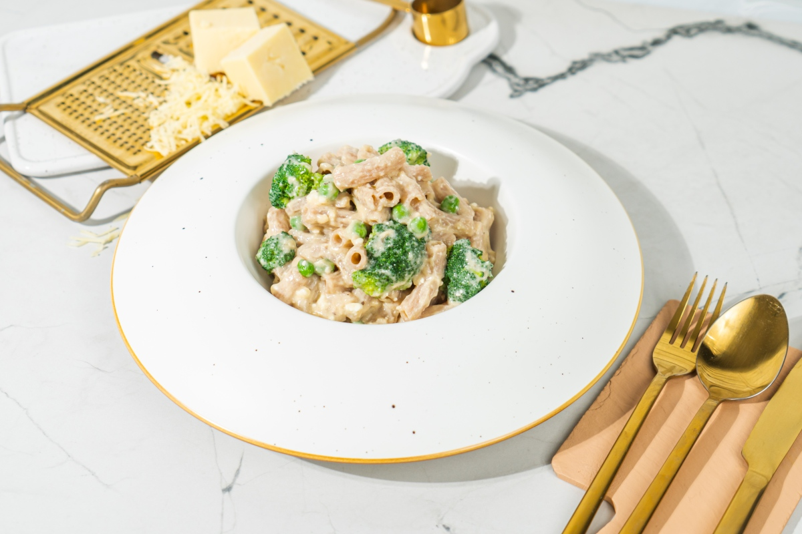

Healthy Mac and Cheese

To make this healthy pasta recipe gluten free, simply switch out the whole wheat noodles for gluten-free pasta! Simple.
To make this vegan is a bit more challenging. You can try the recipe with oat milk and your favorite vegan cheese, or nutritional yeast, however I can’t guarantee the texture will be the same or that it will be as high protein as our recipe.
Ingredients
- 130 g wholegrain pasta
- 55 g broccoli (chopped)
- 55 g peas
- 70 g mature cheddar
- 180 ml milk of choice (can be vegan, I used oat milk)
- 1 ½ tbsp cornstarch
- Salt to taste
- ½ tsp garlic powder
- ¼ tsp onion powder
- 1 tsp mustard
- ¼ tsp black pepper
- 70 g cottage cheese
Steps
Pasta and veggies
- Cook pasta in salted boiling water.
- Add the chopped broccoli and peas about 2-3 minutes before the pasta is ready. They should be bright green, soft on the outside and crunchy in the middle.
- Strain the water from the pasta, broccoli and peas.
Sauce
- Meanwhile, in a large saucepan grate the cheddar, add the milk, cornstarch, salt, garlic and onion powder, mustard and black pepper. Mix until the cornstarch is dissolved.
- Here is where you mix in the optional mango chutney and Worcestershire sauce, too
- Place on medium heat and cook, stirring often, until the cheese is melted into the sauce, the sauce boils and thickens. Allow to boil for around 1-2 minutes to cook the cornstarch, while mixing.
Assemble
- Optional but great: blend the cottage cheese separately.
- Take the sauce off the stove, add the cottage cheese (blended or normal) and stir again. Then add the pasta, broccoli and peas. Mix everything gently together until the sauce coats the pasta.
- CAUTION: Don't boil cottage cheese, it'll 'curl'.
- Eat immediately. It can be reheated in the microwave or oven, NOT on the stove!